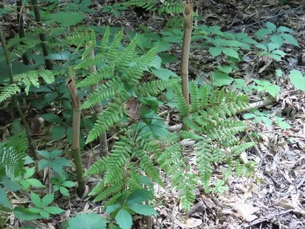

蕨类与裸子植物 · 植物界
蕨 Pteridium aquilinum

蕨是分布最广的蕨类之一，嫩叶拳卷可作野菜“蕨菜”，根状茎富含淀粉，但全株含致癌物，不宜多食。
- 分类
- 门蕨类植物门纲水龙骨纲目水龙骨目科碗蕨科属蕨属
- 栖息环境
- 林缘、山坡、荒地与火烧迹地，喜湿润排水良好的酸性土壤
- 地理分布
- 中国各地及北半球温带、亚热带地区广泛分布
- 保护级别
- 暂无评估；常见，为酸性土壤指示植物
物种志
蕨是碗蕨科的大型多年生蕨类，株高可达 1 m。根状茎长而横走，深入地下；叶片为三回羽状复叶，轮廓呈三角形或卵状三角形，革质至纸质，羽片对生，末回小羽片披针形。幼叶拳卷如握拳，密被绒毛，是春天人们常采的“蕨菜”。孢子囊群沿叶缘着生，由叶缘反卷形成的假囊群盖保护。
蕨喜阳光充足、土壤湿润而排水良好的环境，常见于林缘、山坡、荒地与火烧迹地，根状茎蔓延迅速，是酸性土壤的指示植物之一。它以孢子繁殖，也可用根状茎分株。春季拳卷的嫩叶可焯水后炒食或腌渍，但蕨全株含原蕨苷，长期大量食用有健康风险，不宜多吃。根状茎可提取淀粉，民间称“蕨粉”。蕨在北半球温带与亚热带广泛分布。
形态与习性
- 株高可达 1 m
- 叶三回羽状复叶，幼叶拳卷
- 根状茎长而横走，可提取蕨粉
- 孢子孢子囊群沿叶缘着生
- 毒性含原蕨苷，不宜长期大量食用
- 用途嫩叶作蕨菜，根状茎制蕨粉
趣味知识
- 蕨的嫩叶拳卷如握拳，民间把它采来做“蕨菜”，焯水后才能食用。
- 蕨全株含原蕨苷，长期大量食用有健康风险，不宜多吃。
- 它的根状茎富含淀粉，可加工成“蕨粉”作食品。